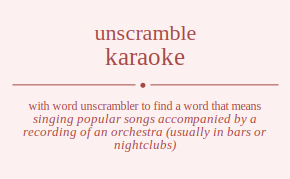

The word found after unscrambling karaoke means that singing popular songs accompanied by a recording of an orchestra (usually in bars or nightclubs), .

The word found after unscrambling karaoke means that singing popular songs accompanied by a recording of an orchestra (usually in bars or nightclubs), .
You can also find solutions for different combinations of letters in karaoke like karaoke karaoek karakoe karakeo karaeok karaeko karoake karoaek karokae karokea karoeak karoeka karkaoe karkaeo karkoae karkoea karkeao karkeoa kareaok kareako kareoak kareoka karekao karekoa kaaroke kaaroek kaarkoe kaarkeo kaareok kaareko kaaorke kaaorek kaaokre kaaoker kaaoerk kaaoekr kaakroe kaakreo kaakore kaakoer kaakero kaakeor kaaerok kaaerko kaaeork kaaeokr kaaekro kaaekor kaorake kaoraek kaorkae kaorkea kaoreak kaoreka kaoarke kaoarek kaoakre kaoaker kaoaerk kaoaekr kaokrae kaokrea kaokare kaokaer kaokera kaokear kaoerak kaoerka kaoeark kaoeakr kaoekra kaoekar kakraoe kakraeo kakroae kakroea kakreao kakreoa kakaroe kakareo kakaore kakaoer kakaero kakaeor kakorae kakorea kakoare kakoaer kakoera kakoear kakerao kakeroa kakearo kakeaor kakeora kakeoar kaeraok kaerako kaeroak kaeroka kaerkao kaerkoa kaearok kaearko kaeaork kaeaokr kaeakro kaeakor kaeorak kaeorka kaeoark kaeoakr kaeokra kaeokar kaekrao kaekroa kaekaro kaekaor kaekora kaekoar kraaoke kraaoek kraakoe kraakeo kraaeok kraaeko kraoake kraoaek kraokae kraokea kraoeak kraoeka krakaoe krakaeo krakoae krakoea krakeao krakeoa kraeaok kraeako kraeoak kraeoka kraekao kraekoa kraaoke kraaoek kraakoe kraakeo kraaeok kraaeko kraoake kraoaek kraokae kraokea kraoeak kraoeka krakaoe krakaeo krakoae krakoea krakeao krakeoa kraeaok kraeako kraeoak kraeoka kraekao kraekoa kroaake kroaaek kroakae kroakea kroaeak kroaeka kroaake kroaaek kroakae kroakea kroaeak kroaeka krokaae krokaea krokaae krokaea krokeaa krokeaa kroeaak kroeaka kroeaak kroeaka kroekaa kroekaa krkaaoe krkaaeo krkaoae krkaoea krkaeao krkaeoa krkaaoe krkaaeo krkaoae krkaoea krkaeao krkaeoa krkoaae krkoaea krkoaae krkoaea krkoeaa krkoeaa krkeaao krkeaoa krkeaao krkeaoa krkeoaa krkeoaa kreaaok kreaako kreaoak kreaoka kreakao kreakoa kreaaok kreaako kreaoak kreaoka kreakao kreakoa kreoaak kreoaka kreoaak kreoaka kreokaa kreokaa krekaao krekaoa krekaao krekaoa krekoaa krekoaa kaaroke kaaroek kaarkoe kaarkeo kaareok kaareko kaaorke kaaorek kaaokre kaaoker kaaoerk kaaoekr kaakroe kaakreo kaakore kaakoer kaakero kaakeor kaaerok kaaerko kaaeork kaaeokr kaaekro kaaekor karaoke karaoek karakoe karakeo karaeok karaeko karoake karoaek karokae karokea karoeak karoeka karkaoe karkaeo karkoae karkoea karkeao karkeoa kareaok kareako kareoak kareoka karekao karekoa kaoarke kaoarek kaoakre kaoaker kaoaerk kaoaekr kaorake kaoraek kaorkae kaorkea kaoreak kaoreka kaokare kaokaer kaokrae kaokrea kaokear kaokera kaoeark kaoeakr kaoerak kaoerka kaoekar kaoekra kakaroe kakareo kakaore kakaoer kakaero kakaeor kakraoe kakraeo kakroae kakroea kakreao kakreoa kakoare kakoaer kakorae kakorea kakoear kakoera kakearo kakeaor kakerao kakeroa kakeoar kakeora kaearok kaearko kaeaork kaeaokr kaeakro kaeakor kaeraok kaerako kaeroak kaeroka kaerkao kaerkoa kaeoark kaeoakr kaeorak kaeorka kaeokar kaeokra kaekaro kaekaor kaekrao kaekroa kaekoar kaekora koarake koaraek koarkae koarkea koareak koareka koaarke koaarek koaakre koaaker koaaerk koaaekr koakrae koakrea koakare koakaer koakera koakear koaerak koaerka koaeark koaeakr koaekra koaekar koraake koraaek korakae korakea koraeak koraeka koraake koraaek korakae korakea koraeak koraeka korkaae korkaea korkaae korkaea korkeaa korkeaa koreaak koreaka koreaak koreaka korekaa korekaa koaarke koaarek koaakre koaaker koaaerk koaaekr koarake koaraek koarkae koarkea koareak koareka koakare koakaer koakrae koakrea koakear koakera koaeark koaeakr koaerak koaerka koaekar koaekra kokarae kokarea kokaare kokaaer kokaera kokaear kokraae kokraea kokraae kokraea kokreaa kokreaa kokaare kokaaer kokarae kokarea kokaear kokaera kokeara kokeaar kokeraa kokeraa kokeaar kokeara koearak koearka koeaark koeaakr koeakra koeakar koeraak koeraka koeraak koeraka koerkaa koerkaa koeaark koeaakr koearak koearka koeakar koeakra koekara koekaar koekraa koekraa koekaar koekara kkaraoe kkaraeo kkaroae kkaroea kkareao kkareoa kkaaroe kkaareo kkaaore kkaaoer kkaaero kkaaeor kkaorae kkaorea kkaoare kkaoaer kkaoera kkaoear kkaerao kkaeroa kkaearo kkaeaor kkaeora kkaeoar kkraaoe kkraaeo kkraoae kkraoea kkraeao kkraeoa kkraaoe kkraaeo kkraoae kkraoea kkraeao kkraeoa kkroaae kkroaea kkroaae kkroaea kkroeaa kkroeaa kkreaao kkreaoa kkreaao kkreaoa kkreoaa kkreoaa kkaaroe kkaareo kkaaore kkaaoer kkaaero kkaaeor kkaraoe kkaraeo kkaroae kkaroea kkareao kkareoa kkaoare kkaoaer kkaorae kkaorea kkaoear kkaoera kkaearo kkaeaor kkaerao kkaeroa kkaeoar kkaeora kkoarae kkoarea kkoaare kkoaaer kkoaera kkoaear kkoraae kkoraea kkoraae kkoraea kkoreaa kkoreaa kkoaare kkoaaer kkoarae kkoarea kkoaear kkoaera kkoeara kkoeaar kkoeraa kkoeraa kkoeaar kkoeara kkearao kkearoa kkeaaro kkeaaor kkeaora kkeaoar kkeraao kkeraoa kkeraao kkeraoa kkeroaa kkeroaa kkeaaro kkeaaor kkearao kkearoa kkeaoar kkeaora kkeoara kkeoaar kkeoraa kkeoraa kkeoaar kkeoara kearaok kearako kearoak kearoka kearkao kearkoa keaarok keaarko keaaork keaaokr keaakro keaakor keaorak keaorka keaoark keaoakr keaokra keaokar keakrao keakroa keakaro keakaor keakora keakoar keraaok keraako keraoak keraoka kerakao kerakoa keraaok keraako keraoak keraoka kerakao kerakoa keroaak keroaka keroaak keroaka kerokaa kerokaa kerkaao kerkaoa kerkaao kerkaoa kerkoaa kerkoaa keaarok keaarko keaaork keaaokr keaakro keaakor kearaok kearako kearoak kearoka kearkao kearkoa keaoark keaoakr keaorak keaorka keaokar keaokra keakaro keakaor keakrao keakroa keakoar keakora keoarak keoarka keoaark keoaakr keoakra keoakar keoraak keoraka keoraak keoraka keorkaa keorkaa keoaark keoaakr keoarak keoarka keoakar keoakra keokara keokaar keokraa keokraa keokaar keokara kekarao kekaroa kekaaro kekaaor kekaora kekaoar kekraao kekraoa kekraao kekraoa kekroaa kekroaa kekaaro kekaaor kekarao kekaroa kekaoar kekaora kekoara kekoaar kekoraa kekoraa kekoaar kekoara akraoke akraoek akrakoe akrakeo akraeok akraeko akroake akroaek akrokae akrokea akroeak akroeka akrkaoe akrkaeo akrkoae akrkoea akrkeao akrkeoa akreaok akreako akreoak akreoka akrekao akrekoa akaroke akaroek akarkoe akarkeo akareok akareko akaorke akaorek akaokre akaoker akaoerk akaoekr akakroe akakreo akakore akakoer akakero akakeor akaerok akaerko akaeork akaeokr akaekro akaekor akorake akoraek akorkae akorkea akoreak akoreka akoarke akoarek akoakre akoaker akoaerk akoaekr akokrae akokrea akokare akokaer akokera akokear akoerak akoerka akoeark akoeakr akoekra akoekar akkraoe akkraeo akkroae akkroea akkreao akkreoa akkaroe akkareo akkaore akkaoer akkaero akkaeor akkorae akkorea akkoare akkoaer akkoera akkoear akkerao akkeroa akkearo akkeaor akkeora akkeoar akeraok akerako akeroak akeroka akerkao akerkoa akearok akearko akeaork akeaokr akeakro akeakor akeorak akeorka akeoark akeoakr akeokra akeokar akekrao akekroa akekaro akekaor akekora akekoar arkaoke arkaoek arkakoe arkakeo arkaeok arkaeko arkoake arkoaek arkokae arkokea arkoeak arkoeka arkkaoe arkkaeo arkkoae arkkoea arkkeao arkkeoa arkeaok arkeako arkeoak arkeoka arkekao arkekoa arakoke arakoek arakkoe arakkeo arakeok arakeko araokke araokek araokke araokek araoekk araoekk arakkoe arakkeo arakoke arakoek arakeko arakeok araekok araekko araeokk araeokk araekko araekok arokake arokaek arokkae arokkea arokeak arokeka aroakke aroakek aroakke aroakek aroaekk aroaekk arokkae arokkea arokake arokaek arokeka arokeak aroekak aroekka aroeakk aroeakk aroekka aroekak arkkaoe arkkaeo arkkoae arkkoea arkkeao arkkeoa arkakoe arkakeo arkaoke arkaoek arkaeko arkaeok arkokae arkokea arkoake arkoaek arkoeka arkoeak arkekao arkekoa arkeako arkeaok arkeoka arkeoak arekaok arekako arekoak arekoka arekkao arekkoa areakok areakko areaokk areaokk areakko areakok areokak areokka areoakk areoakk areokka areokak arekkao arekkoa arekako arekaok arekoka arekoak aakroke aakroek aakrkoe aakrkeo aakreok aakreko aakorke aakorek aakokre aakoker aakoerk aakoekr aakkroe aakkreo aakkore aakkoer aakkero aakkeor aakerok aakerko aakeork aakeokr aakekro aakekor aarkoke aarkoek aarkkoe aarkkeo aarkeok aarkeko aarokke aarokek aarokke aarokek aaroekk aaroekk aarkkoe aarkkeo aarkoke aarkoek aarkeko aarkeok aarekok aarekko aareokk aareokk aarekko aarekok aaokrke aaokrek aaokkre aaokker aaokerk aaokekr aaorkke aaorkek aaorkke aaorkek aaorekk aaorekk aaokkre aaokker aaokrke aaokrek aaokekr aaokerk aaoekrk aaoekkr aaoerkk aaoerkk aaoekkr aaoekrk aakkroe aakkreo aakkore aakkoer aakkero aakkeor aakrkoe aakrkeo aakroke aakroek aakreko aakreok aakokre aakoker aakorke aakorek aakoekr aakoerk aakekro aakekor aakerko aakerok aakeokr aakeork aaekrok aaekrko aaekork aaekokr aaekkro aaekkor aaerkok aaerkko aaerokk aaerokk aaerkko aaerkok aaeokrk aaeokkr aaeorkk aaeorkk aaeokkr aaeokrk aaekkro aaekkor aaekrko aaekrok aaekokr aaekork aokrake aokraek aokrkae aokrkea aokreak aokreka aokarke aokarek aokakre aokaker aokaerk aokaekr aokkrae aokkrea aokkare aokkaer aokkera aokkear aokerak aokerka aokeark aokeakr aokekra aokekar aorkake aorkaek aorkkae aorkkea aorkeak aorkeka aorakke aorakek aorakke aorakek aoraekk aoraekk aorkkae aorkkea aorkake aorkaek aorkeka aorkeak aorekak aorekka aoreakk aoreakk aorekka aorekak aoakrke aoakrek aoakkre aoakker aoakerk aoakekr aoarkke aoarkek aoarkke aoarkek aoarekk aoarekk aoakkre aoakker aoakrke aoakrek aoakekr aoakerk aoaekrk aoaekkr aoaerkk aoaerkk aoaekkr aoaekrk aokkrae aokkrea aokkare aokkaer aokkera aokkear aokrkae aokrkea aokrake aokraek aokreka aokreak aokakre aokaker aokarke aokarek aokaekr aokaerk aokekra aokekar aokerka aokerak aokeakr aokeark aoekrak aoekrka aoekark aoekakr aoekkra aoekkar aoerkak aoerkka aoerakk aoerakk aoerkka aoerkak aoeakrk aoeakkr aoearkk aoearkk aoeakkr aoeakrk aoekkra aoekkar aoekrka aoekrak aoekakr aoekark akkraoe akkraeo akkroae akkroea akkreao akkreoa akkaroe akkareo akkaore akkaoer akkaero akkaeor akkorae akkorea akkoare akkoaer akkoera akkoear akkerao akkeroa akkearo akkeaor akkeora akkeoar akrkaoe akrkaeo akrkoae akrkoea akrkeao akrkeoa akrakoe akrakeo akraoke akraoek akraeko akraeok akrokae akrokea akroake akroaek akroeka akroeak akrekao akrekoa akreako akreaok akreoka akreoak akakroe akakreo akakore akakoer akakero akakeor akarkoe akarkeo akaroke akaroek akareko akareok akaokre akaoker akaorke akaorek akaoekr akaoerk akaekro akaekor akaerko akaerok akaeokr akaeork akokrae akokrea akokare akokaer akokera akokear akorkae akorkea akorake akoraek akoreka akoreak akoakre akoaker akoarke akoarek akoaekr akoaerk akoekra akoekar akoerka akoerak akoeakr akoeark akekrao akekroa akekaro akekaor akekora akekoar akerkao akerkoa akerako akeraok akeroka akeroak akeakro akeakor akearko akearok akeaokr akeaork akeokra akeokar akeorka akeorak akeoakr akeoark aekraok aekrako aekroak aekroka aekrkao aekrkoa aekarok aekarko aekaork aekaokr aekakro aekakor aekorak aekorka aekoark aekoakr aekokra aekokar aekkrao aekkroa aekkaro aekkaor aekkora aekkoar aerkaok aerkako aerkoak aerkoka aerkkao aerkkoa aerakok aerakko aeraokk aeraokk aerakko aerakok aerokak aerokka aeroakk aeroakk aerokka aerokak aerkkao aerkkoa aerkako aerkaok aerkoka aerkoak aeakrok aeakrko aeakork aeakokr aeakkro aeakkor aearkok aearkko aearokk aearokk aearkko aearkok aeaokrk aeaokkr aeaorkk aeaorkk aeaokkr aeaokrk aeakkro aeakkor aeakrko aeakrok aeakokr aeakork aeokrak aeokrka aeokark aeokakr aeokkra aeokkar aeorkak aeorkka aeorakk aeorakk aeorkka aeorkak aeoakrk aeoakkr aeoarkk aeoarkk aeoakkr aeoakrk aeokkra aeokkar aeokrka aeokrak aeokakr aeokark aekkrao aekkroa aekkaro aekkaor aekkora aekkoar aekrkao aekrkoa aekrako aekraok aekroka aekroak aekakro aekakor aekarko aekarok aekaokr aekaork aekokra aekokar aekorka aekorak aekoakr aekoark rkaaoke rkaaoek rkaakoe rkaakeo rkaaeok rkaaeko rkaoake rkaoaek rkaokae rkaokea rkaoeak rkaoeka rkakaoe rkakaeo rkakoae rkakoea rkakeao rkakeoa rkaeaok rkaeako rkaeoak rkaeoka rkaekao rkaekoa rkaaoke rkaaoek rkaakoe rkaakeo rkaaeok rkaaeko rkaoake rkaoaek rkaokae rkaokea rkaoeak rkaoeka rkakaoe rkakaeo rkakoae rkakoea rkakeao rkakeoa rkaeaok rkaeako rkaeoak rkaeoka rkaekao rkaekoa rkoaake rkoaaek rkoakae rkoakea rkoaeak rkoaeka rkoaake rkoaaek rkoakae rkoakea rkoaeak rkoaeka rkokaae rkokaea rkokaae rkokaea rkokeaa rkokeaa rkoeaak rkoeaka rkoeaak rkoeaka rkoekaa rkoekaa rkkaaoe rkkaaeo rkkaoae rkkaoea rkkaeao rkkaeoa rkkaaoe rkkaaeo rkkaoae rkkaoea rkkaeao rkkaeoa rkkoaae rkkoaea rkkoaae rkkoaea rkkoeaa rkkoeaa rkkeaao rkkeaoa rkkeaao rkkeaoa rkkeoaa rkkeoaa rkeaaok rkeaako rkeaoak rkeaoka rkeakao rkeakoa rkeaaok rkeaako rkeaoak rkeaoka rkeakao rkeakoa rkeoaak rkeoaka rkeoaak rkeoaka rkeokaa rkeokaa rkekaao rkekaoa rkekaao rkekaoa rkekoaa rkekoaa rakaoke rakaoek rakakoe rakakeo rakaeok rakaeko rakoake rakoaek rakokae rakokea rakoeak rakoeka rakkaoe rakkaeo rakkoae rakkoea rakkeao rakkeoa rakeaok rakeako rakeoak rakeoka rakekao rakekoa raakoke raakoek raakkoe raakkeo raakeok raakeko raaokke raaokek raaokke raaokek raaoekk raaoekk raakkoe raakkeo raakoke raakoek raakeko raakeok raaekok raaekko raaeokk raaeokk raaekko raaekok raokake raokaek raokkae raokkea raokeak raokeka raoakke raoakek raoakke raoakek raoaekk raoaekk raokkae raokkea raokake raokaek raokeka raokeak raoekak raoekka raoeakk raoeakk raoekka raoekak rakkaoe rakkaeo rakkoae rakkoea rakkeao rakkeoa rakakoe rakakeo rakaoke rakaoek rakaeko rakaeok rakokae rakokea rakoake rakoaek rakoeka rakoeak rakekao rakekoa rakeako rakeaok rakeoka rakeoak raekaok raekako raekoak raekoka raekkao raekkoa raeakok raeakko raeaokk raeaokk raeakko raeakok raeokak raeokka raeoakk raeoakk raeokka raeokak raekkao raekkoa raekako raekaok raekoka raekoak rakaoke rakaoek rakakoe rakakeo rakaeok rakaeko rakoake rakoaek rakokae rakokea rakoeak rakoeka rakkaoe rakkaeo rakkoae rakkoea rakkeao rakkeoa rakeaok rakeako rakeoak rakeoka rakekao rakekoa raakoke raakoek raakkoe raakkeo raakeok raakeko raaokke raaokek raaokke raaokek raaoekk raaoekk raakkoe raakkeo raakoke raakoek raakeko raakeok raaekok raaekko raaeokk raaeokk raaekko raaekok raokake raokaek raokkae raokkea raokeak raokeka raoakke raoakek raoakke raoakek raoaekk raoaekk raokkae raokkea raokake raokaek raokeka raokeak raoekak raoekka raoeakk raoeakk raoekka raoekak rakkaoe rakkaeo rakkoae rakkoea rakkeao rakkeoa rakakoe rakakeo rakaoke rakaoek rakaeko rakaeok rakokae rakokea rakoake rakoaek rakoeka rakoeak rakekao rakekoa rakeako rakeaok rakeoka rakeoak raekaok raekako raekoak raekoka raekkao raekkoa raeakok raeakko raeaokk raeaokk raeakko raeakok raeokak raeokka raeoakk raeoakk raeokka raeokak raekkao raekkoa raekako raekaok raekoka raekoak rokaake rokaaek rokakae rokakea rokaeak rokaeka rokaake rokaaek rokakae rokakea rokaeak rokaeka rokkaae rokkaea rokkaae rokkaea rokkeaa rokkeaa rokeaak rokeaka rokeaak rokeaka rokekaa rokekaa roakake roakaek roakkae roakkea roakeak roakeka roaakke roaakek roaakke roaakek roaaekk roaaekk roakkae roakkea roakake roakaek roakeka roakeak roaekak roaekka roaeakk roaeakk roaekka roaekak roakake roakaek roakkae roakkea roakeak roakeka roaakke roaakek roaakke roaakek roaaekk roaaekk roakkae roakkea roakake roakaek roakeka roakeak roaekak roaekka roaeakk roaeakk roaekka roaekak rokkaae rokkaea rokkaae rokkaea rokkeaa rokkeaa rokakae rokakea rokaake rokaaek rokaeka rokaeak rokakae rokakea rokaake rokaaek rokaeka rokaeak rokekaa rokekaa rokeaka rokeaak rokeaka rokeaak roekaak roekaka roekaak roekaka roekkaa roekkaa roeakak roeakka roeaakk roeaakk roeakka roeakak roeakak roeakka roeaakk roeaakk roeakka roeakak roekkaa roekkaa roekaka roekaak roekaka roekaak rkkaaoe rkkaaeo rkkaoae rkkaoea rkkaeao rkkaeoa rkkaaoe rkkaaeo rkkaoae rkkaoea rkkaeao rkkaeoa rkkoaae rkkoaea rkkoaae rkkoaea rkkoeaa rkkoeaa rkkeaao rkkeaoa rkkeaao rkkeaoa rkkeoaa rkkeoaa rkakaoe rkakaeo rkakoae rkakoea rkakeao rkakeoa rkaakoe rkaakeo rkaaoke rkaaoek rkaaeko rkaaeok rkaokae rkaokea rkaoake rkaoaek rkaoeka rkaoeak rkaekao rkaekoa rkaeako rkaeaok rkaeoka rkaeoak rkakaoe rkakaeo rkakoae rkakoea rkakeao rkakeoa rkaakoe rkaakeo rkaaoke rkaaoek rkaaeko rkaaeok rkaokae rkaokea rkaoake rkaoaek rkaoeka rkaoeak rkaekao rkaekoa rkaeako rkaeaok rkaeoka rkaeoak rkokaae rkokaea rkokaae rkokaea rkokeaa rkokeaa rkoakae rkoakea rkoaake rkoaaek rkoaeka rkoaeak rkoakae rkoakea rkoaake rkoaaek rkoaeka rkoaeak rkoekaa rkoekaa rkoeaka rkoeaak rkoeaka rkoeaak rkekaao rkekaoa rkekaao rkekaoa rkekoaa rkekoaa rkeakao rkeakoa rkeaako rkeaaok rkeaoka rkeaoak rkeakao rkeakoa rkeaako rkeaaok rkeaoka rkeaoak rkeokaa rkeokaa rkeoaka rkeoaak rkeoaka rkeoaak rekaaok rekaako rekaoak rekaoka rekakao rekakoa rekaaok rekaako rekaoak rekaoka rekakao rekakoa rekoaak rekoaka rekoaak rekoaka rekokaa rekokaa rekkaao rekkaoa rekkaao rekkaoa rekkoaa rekkoaa reakaok reakako reakoak reakoka reakkao reakkoa reaakok reaakko reaaokk reaaokk reaakko reaakok reaokak reaokka reaoakk reaoakk reaokka reaokak reakkao reakkoa reakako reakaok reakoka reakoak reakaok reakako reakoak reakoka reakkao reakkoa reaakok reaakko reaaokk reaaokk reaakko reaakok reaokak reaokka reaoakk reaoakk reaokka reaokak reakkao reakkoa reakako reakaok reakoka reakoak reokaak reokaka reokaak reokaka reokkaa reokkaa reoakak reoakka reoaakk reoaakk reoakka reoakak reoakak reoakka reoaakk reoaakk reoakka reoakak reokkaa reokkaa reokaka reokaak reokaka reokaak rekkaao rekkaoa rekkaao rekkaoa rekkoaa rekkoaa rekakao rekakoa rekaako rekaaok rekaoka rekaoak rekakao rekakoa rekaako rekaaok rekaoka rekaoak rekokaa rekokaa rekoaka rekoaak rekoaka rekoaak akaroke akaroek akarkoe akarkeo akareok akareko akaorke akaorek akaokre akaoker akaoerk akaoekr akakroe akakreo akakore akakoer akakero akakeor akaerok akaerko akaeork akaeokr akaekro akaekor akraoke akraoek akrakoe akrakeo akraeok akraeko akroake akroaek akrokae akrokea akroeak akroeka akrkaoe akrkaeo akrkoae akrkoea akrkeao akrkeoa akreaok akreako akreoak akreoka akrekao akrekoa akoarke akoarek akoakre akoaker akoaerk akoaekr akorake akoraek akorkae akorkea akoreak akoreka akokare akokaer akokrae akokrea akokear akokera akoeark akoeakr akoerak akoerka akoekar akoekra akkaroe akkareo akkaore akkaoer akkaero akkaeor akkraoe akkraeo akkroae akkroea akkreao akkreoa akkoare akkoaer akkorae akkorea akkoear akkoera akkearo akkeaor akkerao akkeroa akkeoar akkeora akearok akearko akeaork akeaokr akeakro akeakor akeraok akerako akeroak akeroka akerkao akerkoa akeoark akeoakr akeorak akeorka akeokar akeokra akekaro akekaor akekrao akekroa akekoar akekora aakroke aakroek aakrkoe aakrkeo aakreok aakreko aakorke aakorek aakokre aakoker aakoerk aakoekr aakkroe aakkreo aakkore aakkoer aakkero aakkeor aakerok aakerko aakeork aakeokr aakekro aakekor aarkoke aarkoek aarkkoe aarkkeo aarkeok aarkeko aarokke aarokek aarokke aarokek aaroekk aaroekk aarkkoe aarkkeo aarkoke aarkoek aarkeko aarkeok aarekok aarekko aareokk aareokk aarekko aarekok aaokrke aaokrek aaokkre aaokker aaokerk aaokekr aaorkke aaorkek aaorkke aaorkek aaorekk aaorekk aaokkre aaokker aaokrke aaokrek aaokekr aaokerk aaoekrk aaoekkr aaoerkk aaoerkk aaoekkr aaoekrk aakkroe aakkreo aakkore aakkoer aakkero aakkeor aakrkoe aakrkeo aakroke aakroek aakreko aakreok aakokre aakoker aakorke aakorek aakoekr aakoerk aakekro aakekor aakerko aakerok aakeokr aakeork aaekrok aaekrko aaekork aaekokr aaekkro aaekkor aaerkok aaerkko aaerokk aaerokk aaerkko aaerkok aaeokrk aaeokkr aaeorkk aaeorkk aaeokkr aaeokrk aaekkro aaekkor aaekrko aaekrok aaekokr aaekork arkaoke arkaoek arkakoe arkakeo arkaeok arkaeko arkoake arkoaek arkokae arkokea arkoeak arkoeka arkkaoe arkkaeo arkkoae arkkoea arkkeao arkkeoa arkeaok arkeako arkeoak arkeoka arkekao arkekoa arakoke arakoek arakkoe arakkeo arakeok arakeko araokke araokek araokke araokek araoekk araoekk arakkoe arakkeo arakoke arakoek arakeko arakeok araekok araekko araeokk araeokk araekko araekok arokake arokaek arokkae arokkea arokeak arokeka aroakke aroakek aroakke aroakek aroaekk aroaekk arokkae arokkea arokake arokaek arokeka arokeak aroekak aroekka aroeakk aroeakk aroekka aroekak arkkaoe arkkaeo arkkoae arkkoea arkkeao arkkeoa arkakoe arkakeo arkaoke arkaoek arkaeko arkaeok arkokae arkokea arkoake arkoaek arkoeka arkoeak arkekao arkekoa arkeako arkeaok arkeoka arkeoak arekaok arekako arekoak arekoka arekkao arekkoa areakok areakko areaokk areaokk areakko areakok areokak areokka areoakk areoakk areokka areokak arekkao arekkoa arekako arekaok arekoka arekoak aokarke aokarek aokakre aokaker aokaerk aokaekr aokrake aokraek aokrkae aokrkea aokreak aokreka aokkare aokkaer aokkrae aokkrea aokkear aokkera aokeark aokeakr aokerak aokerka aokekar aokekra aoakrke aoakrek aoakkre aoakker aoakerk aoakekr aoarkke aoarkek aoarkke aoarkek aoarekk aoarekk aoakkre aoakker aoakrke aoakrek aoakekr aoakerk aoaekrk aoaekkr aoaerkk aoaerkk aoaekkr aoaekrk aorkake aorkaek aorkkae aorkkea aorkeak aorkeka aorakke aorakek aorakke aorakek aoraekk aoraekk aorkkae aorkkea aorkake aorkaek aorkeka aorkeak aorekak aorekka aoreakk aoreakk aorekka aorekak aokkare aokkaer aokkrae aokkrea aokkear aokkera aokakre aokaker aokarke aokarek aokaekr aokaerk aokrkae aokrkea aokrake aokraek aokreka aokreak aokekar aokekra aokeakr aokeark aokerka aokerak aoekark aoekakr aoekrak aoekrka aoekkar aoekkra aoeakrk aoeakkr aoearkk aoearkk aoeakkr aoeakrk aoerkak aoerkka aoerakk aoerakk aoerkka aoerkak aoekkar aoekkra aoekakr aoekark aoekrka aoekrak akkaroe akkareo akkaore akkaoer akkaero akkaeor akkraoe akkraeo akkroae akkroea akkreao akkreoa akkoare akkoaer akkorae akkorea akkoear akkoera akkearo akkeaor akkerao akkeroa akkeoar akkeora akakroe akakreo akakore akakoer akakero akakeor akarkoe akarkeo akaroke akaroek akareko akareok akaokre akaoker akaorke akaorek akaoekr akaoerk akaekro akaekor akaerko akaerok akaeokr akaeork akrkaoe akrkaeo akrkoae akrkoea akrkeao akrkeoa akrakoe akrakeo akraoke akraoek akraeko akraeok akrokae akrokea akroake akroaek akroeka akroeak akrekao akrekoa akreako akreaok akreoka akreoak akokare akokaer akokrae akokrea akokear akokera akoakre akoaker akoarke akoarek akoaekr akoaerk akorkae akorkea akorake akoraek akoreka akoreak akoekar akoekra akoeakr akoeark akoerka akoerak akekaro akekaor akekrao akekroa akekoar akekora akeakro akeakor akearko akearok akeaokr akeaork akerkao akerkoa akerako akeraok akeroka akeroak akeokar akeokra akeoakr akeoark akeorka akeorak aekarok aekarko aekaork aekaokr aekakro aekakor aekraok aekrako aekroak aekroka aekrkao aekrkoa aekoark aekoakr aekorak aekorka aekokar aekokra aekkaro aekkaor aekkrao aekkroa aekkoar aekkora aeakrok aeakrko aeakork aeakokr aeakkro aeakkor aearkok aearkko aearokk aearokk aearkko aearkok aeaokrk aeaokkr aeaorkk aeaorkk aeaokkr aeaokrk aeakkro aeakkor aeakrko aeakrok aeakokr aeakork aerkaok aerkako aerkoak aerkoka aerkkao aerkkoa aerakok aerakko aeraokk aeraokk aerakko aerakok aerokak aerokka aeroakk aeroakk aerokka aerokak aerkkao aerkkoa aerkako aerkaok aerkoka aerkoak aeokark aeokakr aeokrak aeokrka aeokkar aeokkra aeoakrk aeoakkr aeoarkk aeoarkk aeoakkr aeoakrk aeorkak aeorkka aeorakk aeorakk aeorkka aeorkak aeokkar aeokkra aeokakr aeokark aeokrka aeokrak aekkaro aekkaor aekkrao aekkroa aekkoar aekkora aekakro aekakor aekarko aekarok aekaokr aekaork aekrkao aekrkoa aekrako aekraok aekroka aekroak aekokar aekokra aekoakr aekoark aekorka aekorak okarake okaraek okarkae okarkea okareak okareka okaarke okaarek okaakre okaaker okaaerk okaaekr okakrae okakrea okakare okakaer okakera okakear okaerak okaerka okaeark okaeakr okaekra okaekar okraake okraaek okrakae okrakea okraeak okraeka okraake okraaek okrakae okrakea okraeak okraeka okrkaae okrkaea okrkaae okrkaea okrkeaa okrkeaa okreaak okreaka okreaak okreaka okrekaa okrekaa okaarke okaarek okaakre okaaker okaaerk okaaekr okarake okaraek okarkae okarkea okareak okareka okakare okakaer okakrae okakrea okakear okakera okaeark okaeakr okaerak okaerka okaekar okaekra okkarae okkarea okkaare okkaaer okkaera okkaear okkraae okkraea okkraae okkraea okkreaa okkreaa okkaare okkaaer okkarae okkarea okkaear okkaera okkeara okkeaar okkeraa okkeraa okkeaar okkeara okearak okearka okeaark okeaakr okeakra okeakar okeraak okeraka okeraak okeraka okerkaa okerkaa okeaark okeaakr okearak okearka okeakar okeakra okekara okekaar okekraa okekraa okekaar okekara oakrake oakraek oakrkae oakrkea oakreak oakreka oakarke oakarek oakakre oakaker oakaerk oakaekr oakkrae oakkrea oakkare oakkaer oakkera oakkear oakerak oakerka oakeark oakeakr oakekra oakekar oarkake oarkaek oarkkae oarkkea oarkeak oarkeka oarakke oarakek oarakke oarakek oaraekk oaraekk oarkkae oarkkea oarkake oarkaek oarkeka oarkeak oarekak oarekka oareakk oareakk oarekka oarekak oaakrke oaakrek oaakkre oaakker oaakerk oaakekr oaarkke oaarkek oaarkke oaarkek oaarekk oaarekk oaakkre oaakker oaakrke oaakrek oaakekr oaakerk oaaekrk oaaekkr oaaerkk oaaerkk oaaekkr oaaekrk oakkrae oakkrea oakkare oakkaer oakkera oakkear oakrkae oakrkea oakrake oakraek oakreka oakreak oakakre oakaker oakarke oakarek oakaekr oakaerk oakekra oakekar oakerka oakerak oakeakr oakeark oaekrak oaekrka oaekark oaekakr oaekkra oaekkar oaerkak oaerkka oaerakk oaerakk oaerkka oaerkak oaeakrk oaeakkr oaearkk oaearkk oaeakkr oaeakrk oaekkra oaekkar oaekrka oaekrak oaekakr oaekark orkaake orkaaek orkakae orkakea orkaeak orkaeka orkaake orkaaek orkakae orkakea orkaeak orkaeka orkkaae orkkaea orkkaae orkkaea orkkeaa orkkeaa orkeaak orkeaka orkeaak orkeaka orkekaa orkekaa orakake orakaek orakkae orakkea orakeak orakeka oraakke oraakek oraakke oraakek oraaekk oraaekk orakkae orakkea orakake orakaek orakeka orakeak oraekak oraekka oraeakk oraeakk oraekka oraekak orakake orakaek orakkae orakkea orakeak orakeka oraakke oraakek oraakke oraakek oraaekk oraaekk orakkae orakkea orakake orakaek orakeka orakeak oraekak oraekka oraeakk oraeakk oraekka oraekak orkkaae orkkaea orkkaae orkkaea orkkeaa orkkeaa orkakae orkakea orkaake orkaaek orkaeka orkaeak orkakae orkakea orkaake orkaaek orkaeka orkaeak orkekaa orkekaa orkeaka orkeaak orkeaka orkeaak orekaak orekaka orekaak orekaka orekkaa orekkaa oreakak oreakka oreaakk oreaakk oreakka oreakak oreakak oreakka oreaakk oreaakk oreakka oreakak orekkaa orekkaa orekaka orekaak orekaka orekaak oakarke oakarek oakakre oakaker oakaerk oakaekr oakrake oakraek oakrkae oakrkea oakreak oakreka oakkare oakkaer oakkrae oakkrea oakkear oakkera oakeark oakeakr oakerak oakerka oakekar oakekra oaakrke oaakrek oaakkre oaakker oaakerk oaakekr oaarkke oaarkek oaarkke oaarkek oaarekk oaarekk oaakkre oaakker oaakrke oaakrek oaakekr oaakerk oaaekrk oaaekkr oaaerkk oaaerkk oaaekkr oaaekrk oarkake oarkaek oarkkae oarkkea oarkeak oarkeka oarakke oarakek oarakke oarakek oaraekk oaraekk oarkkae oarkkea oarkake oarkaek oarkeka oarkeak oarekak oarekka oareakk oareakk oarekka oarekak oakkare oakkaer oakkrae oakkrea oakkear oakkera oakakre oakaker oakarke oakarek oakaekr oakaerk oakrkae oakrkea oakrake oakraek oakreka oakreak oakekar oakekra oakeakr oakeark oakerka oakerak oaekark oaekakr oaekrak oaekrka oaekkar oaekkra oaeakrk oaeakkr oaearkk oaearkk oaeakkr oaeakrk oaerkak oaerkka oaerakk oaerakk oaerkka oaerkak oaekkar oaekkra oaekakr oaekark oaekrka oaekrak okkarae okkarea okkaare okkaaer okkaera okkaear okkraae okkraea okkraae okkraea okkreaa okkreaa okkaare okkaaer okkarae okkarea okkaear okkaera okkeara okkeaar okkeraa okkeraa okkeaar okkeara okakrae okakrea okakare okakaer okakera okakear okarkae okarkea okarake okaraek okareka okareak okaakre okaaker okaarke okaarek okaaekr okaaerk okaekra okaekar okaerka okaerak okaeakr okaeark okrkaae okrkaea okrkaae okrkaea okrkeaa okrkeaa okrakae okrakea okraake okraaek okraeka okraeak okrakae okrakea okraake okraaek okraeka okraeak okrekaa okrekaa okreaka okreaak okreaka okreaak okakare okakaer okakrae okakrea okakear okakera okaakre okaaker okaarke okaarek okaaekr okaaerk okarkae okarkea okarake okaraek okareka okareak okaekar okaekra okaeakr okaeark okaerka okaerak okekara okekaar okekraa okekraa okekaar okekara okeakra okeakar okearka okearak okeaakr okeaark okerkaa okerkaa okeraka okeraak okeraka okeraak okeakar okeakra okeaakr okeaark okearka okearak oekarak oekarka oekaark oekaakr oekakra oekakar oekraak oekraka oekraak oekraka oekrkaa oekrkaa oekaark oekaakr oekarak oekarka oekakar oekakra oekkara oekkaar oekkraa oekkraa oekkaar oekkara oeakrak oeakrka oeakark oeakakr oeakkra oeakkar oearkak oearkka oearakk oearakk oearkka oearkak oeaakrk oeaakkr oeaarkk oeaarkk oeaakkr oeaakrk oeakkra oeakkar oeakrka oeakrak oeakakr oeakark oerkaak oerkaka oerkaak oerkaka oerkkaa oerkkaa oerakak oerakka oeraakk oeraakk oerakka oerakak oerakak oerakka oeraakk oeraakk oerakka oerakak oerkkaa oerkkaa oerkaka oerkaak oerkaka oerkaak oeakark oeakakr oeakrak oeakrka oeakkar oeakkra oeaakrk oeaakkr oeaarkk oeaarkk oeaakkr oeaakrk oearkak oearkka oearakk oearakk oearkka oearkak oeakkar oeakkra oeakakr oeakark oeakrka oeakrak oekkara oekkaar oekkraa oekkraa oekkaar oekkara oekakra oekakar oekarka oekarak oekaakr oekaark oekrkaa oekrkaa oekraka oekraak oekraka oekraak oekakar oekakra oekaakr oekaark oekarka oekarak kkaraoe kkaraeo kkaroae kkaroea kkareao kkareoa kkaaroe kkaareo kkaaore kkaaoer kkaaero kkaaeor kkaorae kkaorea kkaoare kkaoaer kkaoera kkaoear kkaerao kkaeroa kkaearo kkaeaor kkaeora kkaeoar kkraaoe kkraaeo kkraoae kkraoea kkraeao kkraeoa kkraaoe kkraaeo kkraoae kkraoea kkraeao kkraeoa kkroaae kkroaea kkroaae kkroaea kkroeaa kkroeaa kkreaao kkreaoa kkreaao kkreaoa kkreoaa kkreoaa kkaaroe kkaareo kkaaore kkaaoer kkaaero kkaaeor kkaraoe kkaraeo kkaroae kkaroea kkareao kkareoa kkaoare kkaoaer kkaorae kkaorea kkaoear kkaoera kkaearo kkaeaor kkaerao kkaeroa kkaeoar kkaeora kkoarae kkoarea kkoaare kkoaaer kkoaera kkoaear kkoraae kkoraea kkoraae kkoraea kkoreaa kkoreaa kkoaare kkoaaer kkoarae kkoarea kkoaear kkoaera kkoeara kkoeaar kkoeraa kkoeraa kkoeaar kkoeara kkearao kkearoa kkeaaro kkeaaor kkeaora kkeaoar kkeraao kkeraoa kkeraao kkeraoa kkeroaa kkeroaa kkeaaro kkeaaor kkearao kkearoa kkeaoar kkeaora kkeoara kkeoaar kkeoraa kkeoraa kkeoaar kkeoara kakraoe kakraeo kakroae kakroea kakreao kakreoa kakaroe kakareo kakaore kakaoer kakaero kakaeor kakorae kakorea kakoare kakoaer kakoera kakoear kakerao kakeroa kakearo kakeaor kakeora kakeoar karkaoe karkaeo karkoae karkoea karkeao karkeoa karakoe karakeo karaoke karaoek karaeko karaeok karokae karokea karoake karoaek karoeka karoeak karekao karekoa kareako kareaok kareoka kareoak kaakroe kaakreo kaakore kaakoer kaakero kaakeor kaarkoe kaarkeo kaaroke kaaroek kaareko kaareok kaaokre kaaoker kaaorke kaaorek kaaoekr kaaoerk kaaekro kaaekor kaaerko kaaerok kaaeokr kaaeork kaokrae kaokrea kaokare kaokaer kaokera kaokear kaorkae kaorkea kaorake kaoraek kaoreka kaoreak kaoakre kaoaker kaoarke kaoarek kaoaekr kaoaerk kaoekra kaoekar kaoerka kaoerak kaoeakr kaoeark kaekrao kaekroa kaekaro kaekaor kaekora kaekoar kaerkao kaerkoa kaerako kaeraok kaeroka kaeroak kaeakro kaeakor kaearko kaearok kaeaokr kaeaork kaeokra kaeokar kaeorka kaeorak kaeoakr kaeoark krkaaoe krkaaeo krkaoae krkaoea krkaeao krkaeoa krkaaoe krkaaeo krkaoae krkaoea krkaeao krkaeoa krkoaae krkoaea krkoaae krkoaea krkoeaa krkoeaa krkeaao krkeaoa krkeaao krkeaoa krkeoaa krkeoaa krakaoe krakaeo krakoae krakoea krakeao krakeoa kraakoe kraakeo kraaoke kraaoek kraaeko kraaeok kraokae kraokea kraoake kraoaek kraoeka kraoeak kraekao kraekoa kraeako kraeaok kraeoka kraeoak krakaoe krakaeo krakoae krakoea krakeao krakeoa kraakoe kraakeo kraaoke kraaoek kraaeko kraaeok kraokae kraokea kraoake kraoaek kraoeka kraoeak kraekao kraekoa kraeako kraeaok kraeoka kraeoak krokaae krokaea krokaae krokaea krokeaa krokeaa kroakae kroakea kroaake kroaaek kroaeka kroaeak kroakae kroakea kroaake kroaaek kroaeka kroaeak kroekaa kroekaa kroeaka kroeaak kroeaka kroeaak krekaao krekaoa krekaao krekaoa krekoaa krekoaa kreakao kreakoa kreaako kreaaok kreaoka kreaoak kreakao kreakoa kreaako kreaaok kreaoka kreaoak kreokaa kreokaa kreoaka kreoaak kreoaka kreoaak kakaroe kakareo kakaore kakaoer kakaero kakaeor kakraoe kakraeo kakroae kakroea kakreao kakreoa kakoare kakoaer kakorae kakorea kakoear kakoera kakearo kakeaor kakerao kakeroa kakeoar kakeora kaakroe kaakreo kaakore kaakoer kaakero kaakeor kaarkoe kaarkeo kaaroke kaaroek kaareko kaareok kaaokre kaaoker kaaorke kaaorek kaaoekr kaaoerk kaaekro kaaekor kaaerko kaaerok kaaeokr kaaeork karkaoe karkaeo karkoae karkoea karkeao karkeoa karakoe karakeo karaoke karaoek karaeko karaeok karokae karokea karoake karoaek karoeka karoeak karekao karekoa kareako kareaok kareoka kareoak kaokare kaokaer kaokrae kaokrea kaokear kaokera kaoakre kaoaker kaoarke kaoarek kaoaekr kaoaerk kaorkae kaorkea kaorake kaoraek kaoreka kaoreak kaoekar kaoekra kaoeakr kaoeark kaoerka kaoerak kaekaro kaekaor kaekrao kaekroa kaekoar kaekora kaeakro kaeakor kaearko kaearok kaeaokr kaeaork kaerkao kaerkoa kaerako kaeraok kaeroka kaeroak kaeokar kaeokra kaeoakr kaeoark kaeorka kaeorak kokarae kokarea kokaare kokaaer kokaera kokaear kokraae kokraea kokraae kokraea kokreaa kokreaa kokaare kokaaer kokarae kokarea kokaear kokaera kokeara kokeaar kokeraa kokeraa kokeaar kokeara koakrae koakrea koakare koakaer koakera koakear koarkae koarkea koarake koaraek koareka koareak koaakre koaaker koaarke koaarek koaaekr koaaerk koaekra koaekar koaerka koaerak koaeakr koaeark korkaae korkaea korkaae korkaea korkeaa korkeaa korakae korakea koraake koraaek koraeka koraeak korakae korakea koraake koraaek koraeka koraeak korekaa korekaa koreaka koreaak koreaka koreaak koakare koakaer koakrae koakrea koakear koakera koaakre koaaker koaarke koaarek koaaekr koaaerk koarkae koarkea koarake koaraek koareka koareak koaekar koaekra koaeakr koaeark koaerka koaerak koekara koekaar koekraa koekraa koekaar koekara koeakra koeakar koearka koearak koeaakr koeaark koerkaa koerkaa koeraka koeraak koeraka koeraak koeakar koeakra koeaakr koeaark koearka koearak kekarao kekaroa kekaaro kekaaor kekaora kekaoar kekraao kekraoa kekraao kekraoa kekroaa kekroaa kekaaro kekaaor kekarao kekaroa kekaoar kekaora kekoara kekoaar kekoraa kekoraa kekoaar kekoara keakrao keakroa keakaro keakaor keakora keakoar kearkao kearkoa kearako kearaok kearoka kearoak keaakro keaakor keaarko keaarok keaaokr keaaork keaokra keaokar keaorka keaorak keaoakr keaoark kerkaao kerkaoa kerkaao kerkaoa kerkoaa kerkoaa kerakao kerakoa keraako keraaok keraoka keraoak kerakao kerakoa keraako keraaok keraoka keraoak kerokaa kerokaa keroaka keroaak keroaka keroaak keakaro keakaor keakrao keakroa keakoar keakora keaakro keaakor keaarko keaarok keaaokr keaaork kearkao kearkoa kearako kearaok kearoka kearoak keaokar keaokra keaoakr keaoark keaorka keaorak keokara keokaar keokraa keokraa keokaar keokara keoakra keoakar keoarka keoarak keoaakr keoaark keorkaa keorkaa keoraka keoraak keoraka keoraak keoakar keoakra keoaakr keoaark keoarka keoarak ekaraok ekarako ekaroak ekaroka ekarkao ekarkoa ekaarok ekaarko ekaaork ekaaokr ekaakro ekaakor ekaorak ekaorka ekaoark ekaoakr ekaokra ekaokar ekakrao ekakroa ekakaro ekakaor ekakora ekakoar ekraaok ekraako ekraoak ekraoka ekrakao ekrakoa ekraaok ekraako ekraoak ekraoka ekrakao ekrakoa ekroaak ekroaka ekroaak ekroaka ekrokaa ekrokaa ekrkaao ekrkaoa ekrkaao ekrkaoa ekrkoaa ekrkoaa ekaarok ekaarko ekaaork ekaaokr ekaakro ekaakor ekaraok ekarako ekaroak ekaroka ekarkao ekarkoa ekaoark ekaoakr ekaorak ekaorka ekaokar ekaokra ekakaro ekakaor ekakrao ekakroa ekakoar ekakora ekoarak ekoarka ekoaark ekoaakr ekoakra ekoakar ekoraak ekoraka ekoraak ekoraka ekorkaa ekorkaa ekoaark ekoaakr ekoarak ekoarka ekoakar ekoakra ekokara ekokaar ekokraa ekokraa ekokaar ekokara ekkarao ekkaroa ekkaaro ekkaaor ekkaora ekkaoar ekkraao ekkraoa ekkraao ekkraoa ekkroaa ekkroaa ekkaaro ekkaaor ekkarao ekkaroa ekkaoar ekkaora ekkoara ekkoaar ekkoraa ekkoraa ekkoaar ekkoara eakraok eakrako eakroak eakroka eakrkao eakrkoa eakarok eakarko eakaork eakaokr eakakro eakakor eakorak eakorka eakoark eakoakr eakokra eakokar eakkrao eakkroa eakkaro eakkaor eakkora eakkoar earkaok earkako earkoak earkoka earkkao earkkoa earakok earakko earaokk earaokk earakko earakok earokak earokka earoakk earoakk earokka earokak earkkao earkkoa earkako earkaok earkoka earkoak eaakrok eaakrko eaakork eaakokr eaakkro eaakkor eaarkok eaarkko eaarokk eaarokk eaarkko eaarkok eaaokrk eaaokkr eaaorkk eaaorkk eaaokkr eaaokrk eaakkro eaakkor eaakrko eaakrok eaakokr eaakork eaokrak eaokrka eaokark eaokakr eaokkra eaokkar eaorkak eaorkka eaorakk eaorakk eaorkka eaorkak eaoakrk eaoakkr eaoarkk eaoarkk eaoakkr eaoakrk eaokkra eaokkar eaokrka eaokrak eaokakr eaokark eakkrao eakkroa eakkaro eakkaor eakkora eakkoar eakrkao eakrkoa eakrako eakraok eakroka eakroak eakakro eakakor eakarko eakarok eakaokr eakaork eakokra eakokar eakorka eakorak eakoakr eakoark erkaaok erkaako erkaoak erkaoka erkakao erkakoa erkaaok erkaako erkaoak erkaoka erkakao erkakoa erkoaak erkoaka erkoaak erkoaka erkokaa erkokaa erkkaao erkkaoa erkkaao erkkaoa erkkoaa erkkoaa erakaok erakako erakoak erakoka erakkao erakkoa eraakok eraakko eraaokk eraaokk eraakko eraakok eraokak eraokka eraoakk eraoakk eraokka eraokak erakkao erakkoa erakako erakaok erakoka erakoak erakaok erakako erakoak erakoka erakkao erakkoa eraakok eraakko eraaokk eraaokk eraakko eraakok eraokak eraokka eraoakk eraoakk eraokka eraokak erakkao erakkoa erakako erakaok erakoka erakoak erokaak erokaka erokaak erokaka erokkaa erokkaa eroakak eroakka eroaakk eroaakk eroakka eroakak eroakak eroakka eroaakk eroaakk eroakka eroakak erokkaa erokkaa erokaka erokaak erokaka erokaak erkkaao erkkaoa erkkaao erkkaoa erkkoaa erkkoaa erkakao erkakoa erkaako erkaaok erkaoka erkaoak erkakao erkakoa erkaako erkaaok erkaoka erkaoak erkokaa erkokaa erkoaka erkoaak erkoaka erkoaak eakarok eakarko eakaork eakaokr eakakro eakakor eakraok eakrako eakroak eakroka eakrkao eakrkoa eakoark eakoakr eakorak eakorka eakokar eakokra eakkaro eakkaor eakkrao eakkroa eakkoar eakkora eaakrok eaakrko eaakork eaakokr eaakkro eaakkor eaarkok eaarkko eaarokk eaarokk eaarkko eaarkok eaaokrk eaaokkr eaaorkk eaaorkk eaaokkr eaaokrk eaakkro eaakkor eaakrko eaakrok eaakokr eaakork earkaok earkako earkoak earkoka earkkao earkkoa earakok earakko earaokk earaokk earakko earakok earokak earokka earoakk earoakk earokka earokak earkkao earkkoa earkako earkaok earkoka earkoak eaokark eaokakr eaokrak eaokrka eaokkar eaokkra eaoakrk eaoakkr eaoarkk eaoarkk eaoakkr eaoakrk eaorkak eaorkka eaorakk eaorakk eaorkka eaorkak eaokkar eaokkra eaokakr eaokark eaokrka eaokrak eakkaro eakkaor eakkrao eakkroa eakkoar eakkora eakakro eakakor eakarko eakarok eakaokr eakaork eakrkao eakrkoa eakrako eakraok eakroka eakroak eakokar eakokra eakoakr eakoark eakorka eakorak eokarak eokarka eokaark eokaakr eokakra eokakar eokraak eokraka eokraak eokraka eokrkaa eokrkaa eokaark eokaakr eokarak eokarka eokakar eokakra eokkara eokkaar eokkraa eokkraa eokkaar eokkara eoakrak eoakrka eoakark eoakakr eoakkra eoakkar eoarkak eoarkka eoarakk eoarakk eoarkka eoarkak eoaakrk eoaakkr eoaarkk eoaarkk eoaakkr eoaakrk eoakkra eoakkar eoakrka eoakrak eoakakr eoakark eorkaak eorkaka eorkaak eorkaka eorkkaa eorkkaa eorakak eorakka eoraakk eoraakk eorakka eorakak eorakak eorakka eoraakk eoraakk eorakka eorakak eorkkaa eorkkaa eorkaka eorkaak eorkaka eorkaak eoakark eoakakr eoakrak eoakrka eoakkar eoakkra eoaakrk eoaakkr eoaarkk eoaarkk eoaakkr eoaakrk eoarkak eoarkka eoarakk eoarakk eoarkka eoarkak eoakkar eoakkra eoakakr eoakark eoakrka eoakrak eokkara eokkaar eokkraa eokkraa eokkaar eokkara eokakra eokakar eokarka eokarak eokaakr eokaark eokrkaa eokrkaa eokraka eokraak eokraka eokraak eokakar eokakra eokaakr eokaark eokarka eokarak ekkarao ekkaroa ekkaaro ekkaaor ekkaora ekkaoar ekkraao ekkraoa ekkraao ekkraoa ekkroaa ekkroaa ekkaaro ekkaaor ekkarao ekkaroa ekkaoar ekkaora ekkoara ekkoaar ekkoraa ekkoraa ekkoaar ekkoara ekakrao ekakroa ekakaro ekakaor ekakora ekakoar ekarkao ekarkoa ekarako ekaraok ekaroka ekaroak ekaakro ekaakor ekaarko ekaarok ekaaokr ekaaork ekaokra ekaokar ekaorka ekaorak ekaoakr ekaoark ekrkaao ekrkaoa ekrkaao ekrkaoa ekrkoaa ekrkoaa ekrakao ekrakoa ekraako ekraaok ekraoka ekraoak ekrakao ekrakoa ekraako ekraaok ekraoka ekraoak ekrokaa ekrokaa ekroaka ekroaak ekroaka ekroaak ekakaro ekakaor ekakrao ekakroa ekakoar ekakora ekaakro ekaakor ekaarko ekaarok ekaaokr ekaaork ekarkao ekarkoa ekarako ekaraok ekaroka ekaroak ekaokar ekaokra ekaoakr ekaoark ekaorka ekaorak ekokara ekokaar ekokraa ekokraa ekokaar ekokara ekoakra ekoakar ekoarka ekoarak ekoaakr ekoaark ekorkaa ekorkaa ekoraka ekoraak ekoraka ekoraak ekoakar ekoakra ekoaakr ekoaark ekoarka ekoarak.
Unscramble Words is registered trademark.